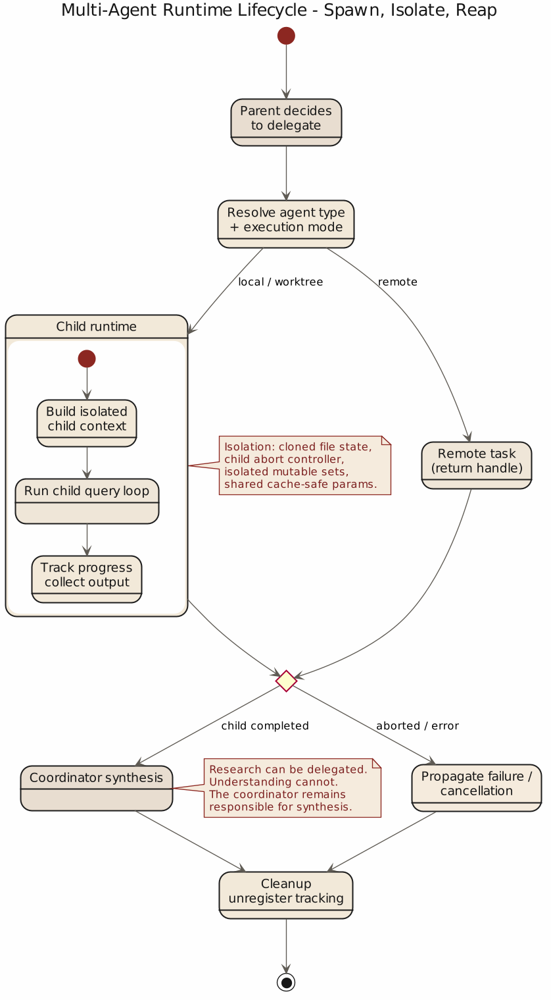

第 7 章 多代理与验证：用分工和验证管理不稳定性
7.1 单代理走到一定程度，问题就不再是“会不会做”，而是“怎么分工”
单代理的小矛盾常靠耐心遮过去，但任务一大，研究、实现、验证就挤在同一条上下文链上抢预算、抢注意力、抢叙事中心。多代理看上去是自然答案，实际并不便宜：不加约束的并行只会把单代理的混乱复制几份。真正困难的是隔离各 agent 的不稳定性，同时把结果组织回来。
Claude Code 的源码在这点上很清醒：它没有把 subagent 当成“另一个会说话的窗口”，而是当成一段需要明确缓存边界、状态边界、验证职责和清理责任的受管执行流程。
7.2 forked agent 的第一原则是 cache-safe
src/utils/forkedAgent.ts 开头有一段注释，非常能说明 Claude Code 对 subagent 的真实理解。它说 forked agent utility 的职责包括：
- 与父代理共享 cache-critical params，确保 prompt cache hit
- 跟踪整个 query loop 的 usage
- 记录指标
- 隔离可变状态，防止干扰主循环
这四条里，最先出现的是“共享 cache-critical params”。这并非偶然。它说明在 Claude Code 眼里，fork 是运行时层面的受控分叉。既然是分叉，就必须非常在意哪些参数必须和父请求保持一致，否则 prompt cache 共享就失效，成本和延迟会立刻变坏。
CacheSafeParams 里明明白白列了这些要素：
systemPromptuserContextsystemContexttoolUseContextforkContextMessages
还专门提醒：别随便改 maxOutputTokens，因为 thinking config 也会受影响，而 thinking config 又是 cache key 的一部分。
这段设计说明，多代理首先是运行时经济学问题。一个子代理如果每次都把父上下文重新烧一遍 token，看上去像在并行提效，实际只是把浪费并行化。Claude Code 在这个环节先处理的是：怎么 fork 才不把缓存打烂。
骨架：forkAgent() (skeleton)
// 骨架: forkAgent() (源: src/utils/forkedAgent.ts, src/utils/createSubagentContext.ts)
params = CacheSafeParams {
systemPrompt, userContext, systemContext,
toolUseContext, forkContextMessages // 必须与父一致，保 prompt cache hit
}
ctx = createSubagentContext(parent):
readFileState := clone(parent.readFileState) // 默认隔离
abortController := new ChildAbortController(parent) // 子控制器挂父上
getAppState := wrap(parent.getAppState, suppress_prompt)
setAppState := noop // 默认只读
nestedMemoryAttachmentTriggers := new Set()
loadedNestedMemoryPaths := new Set()
if opt_in.shareAbortController: ctx.abortController := parent.abortController
if opt_in.shareSetAppState: ctx.setAppState := parent.setAppState
hooks.fire(SubagentStart, { agent_id, agent_type })
track_usage(parent, child)
defer hooks.fire(SubagentStop, { agent_transcript_path }) // 生命周期必须闭合不变式 (invariants)
assert child.CacheSafeParams == parent.CacheSafeParams # fork 不破坏 prompt cache
assert child.mutable_state isolated unless opt_in.share_* # 共享必须显式
assert parent.abort ⇒ propagate(child.abort) # 父死子亡
assert SubagentStart fired ⇒ SubagentStop fired eventually # 生命周期闭合
assert verification_worker ≠ implementation_worker # 验证与实现角色分离7.3 状态隔离说明，子代理首先要减少污染
forked agent 的第二个关键，在 createSubagentContext()。源码里对它的默认行为写得很直白：默认情况下，所有 mutable state 都隔离，避免干扰 parent。
它默认会做这些事：
readFileState先 cloneabortController生成 child controller，而不是直接共享getAppState做包装，让子代理避免 permission promptsetAppState默认 no-opnestedMemoryAttachmentTriggers、loadedNestedMemoryPaths等集合都重新建
只有在明确 opt-in 的情况下，才会共享某些 callback，例如 shareSetAppState、shareSetResponseLength、shareAbortController。
这套设计特别重要，因为它揭示了一个很多人做多代理时都会忽略的事实：子代理最宝贵的地方，在于它可以避免把自己的局部混乱污染主线程。研究中的误判、临时读到的文件状态、一次性的推理枝杈、正在进行的工具决策，如果全都直接写回主上下文，你得到的只会是更快的脏化。
Claude Code 在这里的态度是：共享要靠明确同意，隔离才是默认伦理。这种伦理很像数据库事务设计，不像聊天玩具。它不假定“大家都是自己人，状态可以随便串”，而是假定“只要是可变状态，就必须先隔离，再决定共享哪些部分”。
7.4 协调者模式说明，synthesis 才是稀缺能力
如果只看 src/coordinator/coordinatorMode.ts，你会发现 Claude Code 对 coordinator 的要求很有分寸。它明确说 coordinator 的工作包括：
- 帮用户达成目标
- 指挥 worker 做 research、implementation、verification
- 综合结果并和用户沟通
- 能直接回答的问题就直接回答，不要滥委派
最关键的一句，在第 5 节 prompt 里：Always synthesize。当 worker 回报研究结果后，协调者必须先读懂，再写出具体 prompt；不要说“based on your findings”，不要把理解继续外包给 worker。
这句话几乎是多代理的命门。真正稀缺的不是并行输出，而是有人把 worker 的局部知识重新压成清晰、可执行、可验证的下一步；缺这一层，多代理很快退化成礼貌的任务转发机。Claude Code 在 prompt 设计上要求 research / synthesis 分开、协调者对结果负责，后续 prompt 必须出现具体文件、具体位置、具体变更——研究可以分布式，但理解必须重新收束。
7.5 验证必须独立成阶段，否则“实现完成”很快就会冒充“问题解决”
coordinatorMode.ts 还有一段特别值得抄下来。它把常见任务分成：
- Research
- Synthesis
- Implementation
- Verification
并且专门强调：verification 的目标是证明代码有效，而不只是确认代码存在。源码里甚至写得近乎不留情面：
- run tests with the feature enabled
- investigate errors, don't dismiss as unrelated
- be skeptical
- test independently, don't rubber-stamp
这说明 Claude Code 把验证当成第二层质量关，而不是实现 worker 顺手带的附属动作：prompt 里明确分层为"implementation 自证 + verification 作为独立 QA"。
为什么重要？"我改了代码"和"代码因此正确"之间隔着一条很宽的河，模型尤其擅长在上面搭纸桥——它会给出改动、解释、甚至像样的测试输出，但这些都不等于功能真的在系统里站住。把 verification 单列，正是为了防止"会改代码"冒充"能交付结果"：实现专注于改，验证专门怀疑这些改动配不配活着。
7.6 hooks 和任务生命周期说明，子代理不是扔出去就算了
多代理系统还有一个很容易被忽略的地方：spawn 只是开头，收尾同样重要。
src/utils/hooks/hooksConfigManager.ts 里定义了 SubagentStart 和 SubagentStop 两类 hook。前者在 subagent 启动时触发，输入里有 agent_id 和 agent_type；后者在 subagent 即将结束时触发，输入里还带 agent_transcript_path，并允许 exit code 2 把 stderr 反馈给 subagent，继续让它跑。
这说明子代理在 Claude Code 里是显式暴露生命周期节点的系统对象。启动时可以观测，停止前可以介入，转录路径可追踪。这里的重点在于，“子代理结束”也是需要被管理的事件。
与此同时，src/tasks/LocalAgentTask/LocalAgentTask.tsx 的 registerAsyncAgent() 又展示了另一个层面：每个 async agent 都会注册 cleanup handler，父 abort 可以自动传播给子 abort controller。任务结束后还要 evict output、更新状态、解除 cleanup 注册。
这套机制非常像操作系统，不像聊天面板。它关心的核心问题是：
- 这个 agent 是否仍在运行
- 父任务死了它是否该跟着死
- 它的输出文件是否还要保留
- 它的 cleanup callback 有没有泄漏

很多多代理 demo 都只做到“我能再起一个 agent”，Claude Code 至少多做了一步：它把 agent 当作会泄漏资源、会残留状态、会在父进程结束后变成孤儿的运行实体来看待。这才像是在把代理当系统组件处理。
子代理生命周期失败矩阵 (failure matrix)
| 事件顺序 | 前置状态 | 触发 | 下一步 | 阈值 |
|---|---|---|---|---|
| parent abort + child in-flight | 子任务未完成 | parent abort | 传播 child.abort，等 cleanup | 不可留孤儿 |
| child crash | 子代理异常退出 | SubagentStop exit ≠ 0 |
evict output，fire stop hook | exit 2 允许 stderr 回灌续跑 |
| child timeout | 子运行超限 | registerAsyncAgent 超时 | abort child，写 synthetic result | — |
| cache key drift | CacheSafeParams 被改 |
fork | 拒绝 fork 或重算 cache | 必须完整对齐 |
| shared state 未声明 | opt-in 未开 | child 试图写 setAppState |
no-op，不污染父 | 默认隔离 |
| stale memory 冲突 | memory 与现状不符 | 读取旧 record | 信任现状，update/delete memory | 必须先 verify |
| cleanup 泄漏 | task 结束未取消 handler | finalize | 强制 unregister + evict | 不可留回调 |
7.7 验证不仅针对代码，也针对记忆和建议
多代理与验证并不只发生在 code change 之后。Claude Code 在 memory 体系里也埋了一条很值得注意的原则。
src/memdir/memoryTypes.ts 里专门提醒：memory records can become stale；在基于 memory 给用户建议之前，要先 verify current state；如果记忆与现状冲突，要相信眼下读到的真实状态，并更新或删除 stale memory。
这句话放在多代理章节里，恰好能说明一个更一般的事实：验证是整个系统用来抵抗时间漂移和上下文漂移的基本习惯。一个系统如果只验证新写下去的代码，却不验证旧记忆、旧假设、旧索引，那它仍然会被历史信息带偏。
从这个角度看，verify 既是一项 skill，也是一种组织纪律。你可以把工作分出去，可以把信息存起来，可以让其他 agent 先跑在前面，但在用户准备据此行动之前，总要有人回到当前现实，重新确认这些东西还是真的。
7.8 多代理真正解决的是不确定性的分区
Claude Code 的多代理设计围绕一个朴素目标：给不确定性分区。研究 worker 在局部上下文里探索，实现 worker 专注修改，验证 worker 专门怀疑，coordinator 在中间收束、综合、接口用户。
这种分区的最大好处是职责清晰，错误可定位：research 漏线索、synthesis 没吃透、implementation 写错、verification 放水——每一种都能被指认。反过来，一锅浓汤式的单代理方案出问题只能整体返工。多代理真正有价值的地方，不是并发，而是把不同种类的不确定性关进不同容器，再由 coordinator 组织回来。
7.9 从源码里可以提炼出的第七个原则
这一章最后可以压成一句话：
多代理依赖清晰分工：研究、实现、验证和综合各自处在不同约束容器里，最后由协调者把结果重新缝合成可交付结果。
Claude Code 的源码在几个地方共同支持这个判断：
forkedAgent.ts把 cache-safe 参数、usage tracking 与状态隔离放在第一位，说明 fork 首先是运行时控制问题createSubagentContext()默认隔离 mutable state，只允许显式 opt-in 共享，说明多代理先防污染再谈协作coordinatorMode.ts强调 coordinator 必须 synthesize，而不是转发研究结果，说明综合理解不能外包- 同一个文件把 verification 独立成阶段，并要求独立证明变更有效，说明实现与验证必须角色分离
hooksConfigManager.ts提供SubagentStart/SubagentStop生命周期 hook，说明子代理是可观测对象，不是黑箱线程LocalAgentTask.tsx处理 parent abort、cleanup、output eviction，说明 agent 生命周期需要回收机制
抽成工程原则：fork 先看 cache 与状态边界，再谈"人格分工"；子代理默认隔离，可共享必须显式；研究可委派、综合不可外包；验证必须与实现解耦，否则系统会奖励自证正确；agent 生命周期必须可观测、可中止、可清理；并行的真正价值在于职责更清楚。
下一章要讨论的，是当这一整套机制落到团队里时，如何从个人技巧变成组织制度。也就是说，CLAUDE.md、skills、approval、hook、memory 这些东西，怎样从“某个高手自己会用”变成“一个团队可以稳定复用”的工程实践。